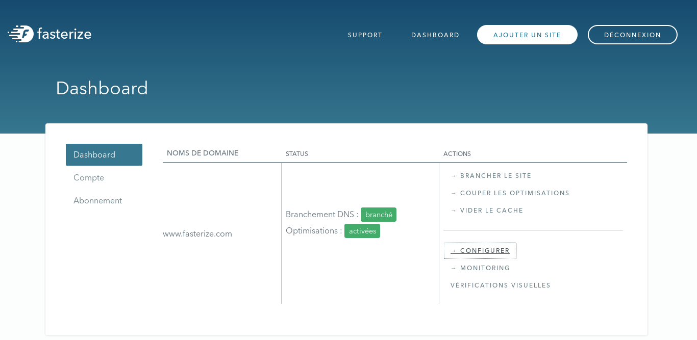
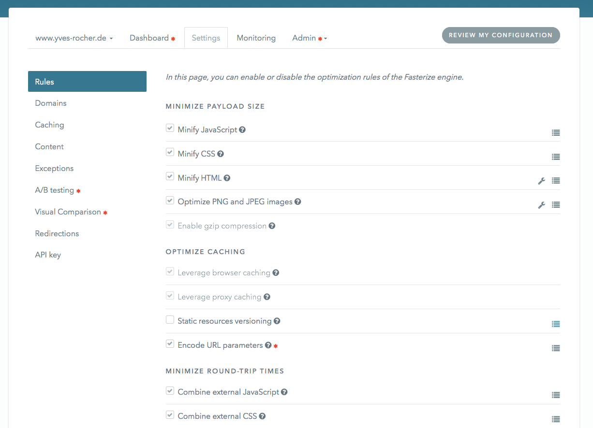
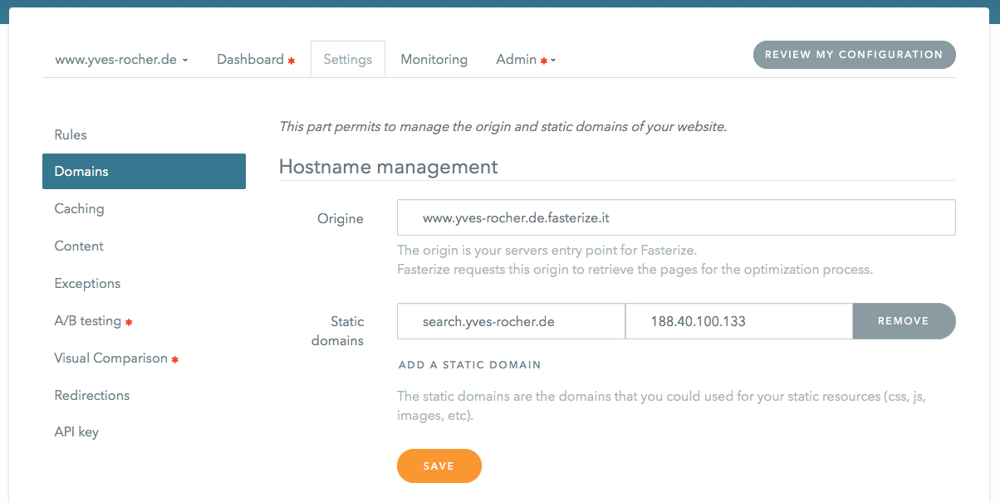
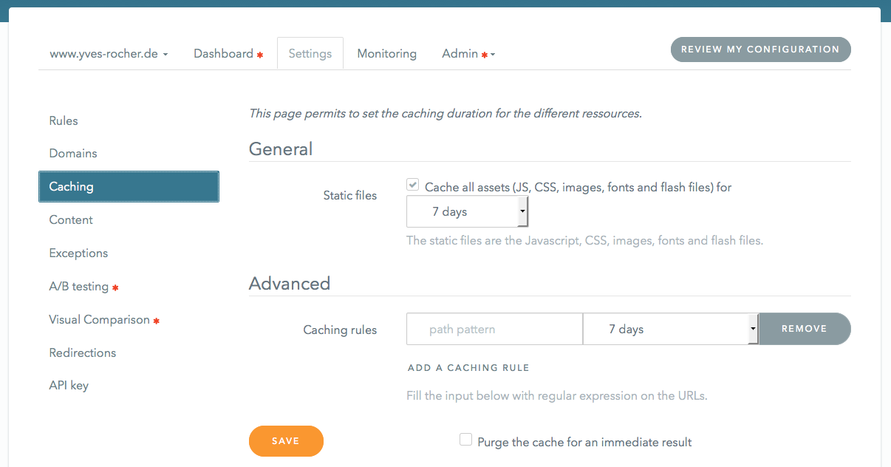

Customer
training
General presentation
General working

Domain names
(automatically initialized)
- fasterized.com
- point to the platform by default (demo/preview mode)
- point to the platform or the origin if config exists
- fasterized.net
- always point to the platform
- fasterize.it
- point to the origin server
- s0.frz.io / s1.frz.io
- sharded domains that are used for static objects
- point to the platform or CDN
Optimization rules
Less requests
Reduce response size
Reorder elements
Other features
- URL versionning
- Mobile/tablet redirect
Exploring interface
Account dashboard
- Configurations list
- For each configuration:
- plugging status
- optimization status
- plugging instructions
- cache flush
- optimizations stop
Account dashboard
Settings
Allow to configure
- Rules
- Domains
- Cache
- Exclusions
- Redirections
- Performance tracking & widgets
- A/B Test
In advanced mode
Settings: rules
- Enable/disable rules
- Possible options: icon
- Exclude one or more URL for a rule: icon
Settings: rules
Settings: domains
- Origin domain name
- Secondary domains (statics)
Settings: domains
Settings: cache
Definition of caching rules for one or more URL
Settings: exclusions
- Allow exclusion of one or more URL from optimizations
- Examples : backoffice, tracking, ajax
- Or allow exclusion of one or more URL in a HTML
Settings: redirections
- Redirections for mobiles and/or tablets to another site
- Can be absolute or relative (preserve path or not)
Troubleshooting
Broken page
Debug parameters
Use debug parameters in querystring
?frz-all=falseto disable all optimizations on a page?frz-[rule]=falseto disable a rule on a page?frz-[rule]-[option]=falseto disable a rule option on a page?frz-persist-[rule]=falseto disable a rule for the session- List of rules here
Broken page
- Enable/disable rules
Generally, problematic rules are
- DeferJS (
deferjs) - Concatenation (
concatjsetconcatcss) - Minification (
minifyjs,minifycss,minifyhtml) - Lazyloading (
lazyload)
Rules can be disabled for specific pages or globally
- DeferJS (
- Exclude problematic URL globally
Unable to get client IP
Error page: 'Couldn't find origin server...'
- Every alias for the website must be configured otherwise Fasterize cannot resolve origin
- Add every alias in domains configuration
- Check origin in domains configuration
Images are degraded
Due to compression, some images (shaded colours for example) can be too heavily changed
- Exclude images from compression
- Exclude images globally
- Disable agressive PNG compression
- Increase compression quality
- Disable image compression
If Fasterize platform is down
.fasterized.com domain is bound to Cedexis and dynamic.
- Requests are automatically redirected to the origin servers
- You can see http://status.fasterize.com/ to follow the platform status live
For advanced users
frz-debug=trueenters debug mode- unminified Fasterize scripts
- displays informations
- set the log level to DEBUG
- HTTP headers (
curl -X GET -I http://www.mysite.com)x-unique-iduseful to track a requestx-fstrzto understand what happened to the request (see detailed meaning on this page)
And if you can't manage ...
Contact support at support@fasterize.com!
Contact support as well to:
- Inform of a global redesign
- Inform of a SSL certificate expiration
- Inform of a server migration